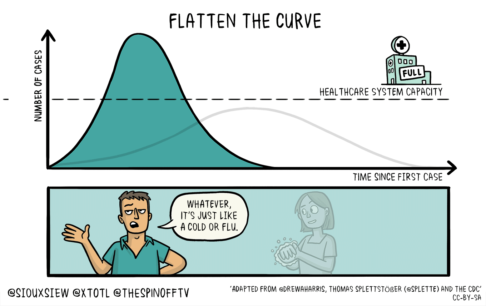
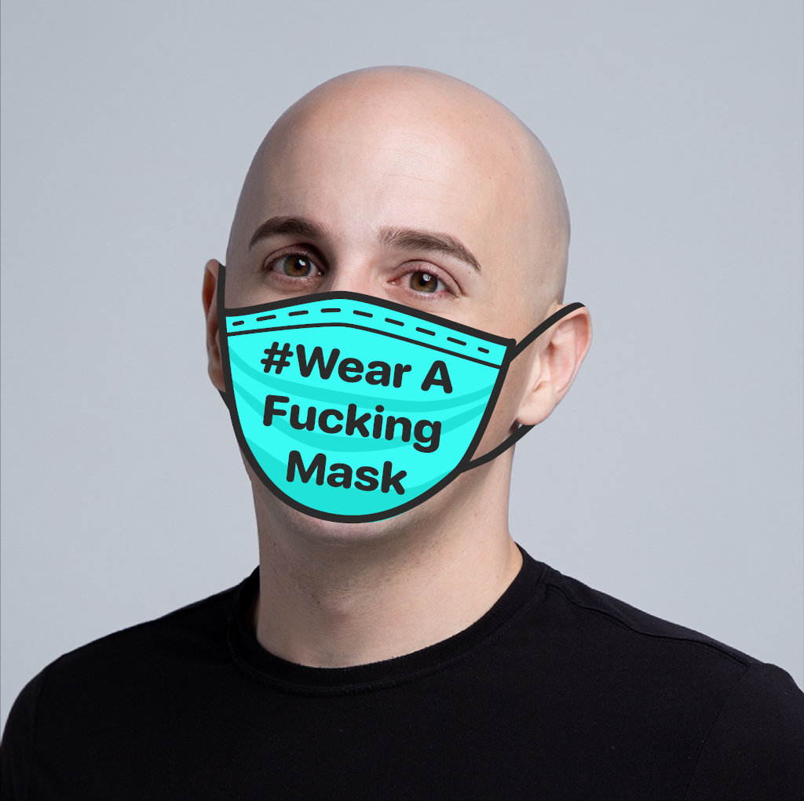
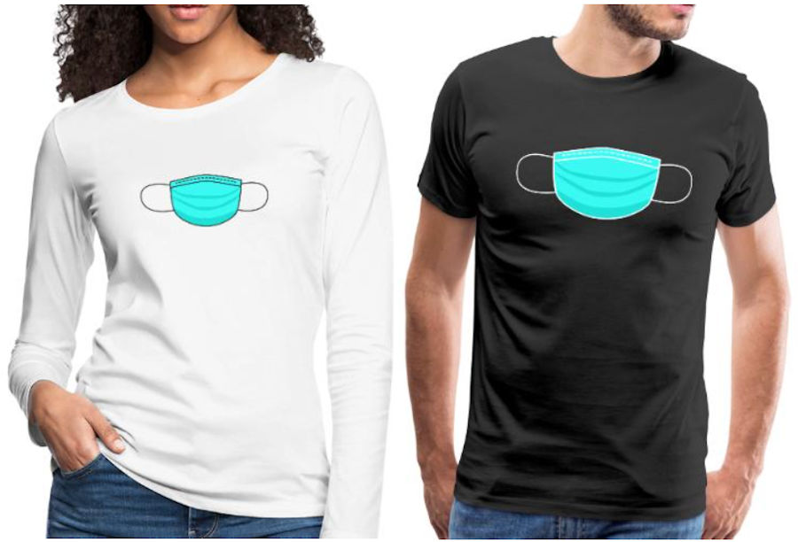

A movement to get people to #WearAF—ingMask and reduce the spread of SARS-CoV-2.
Updates: Masks are hard to find in many countries. I added information on how to make your own mask and links to the research that shows they work.
The Rules
- I will #StayTheF—Home
- If I can not #StayTheF—Home, I will #WearAF—ingMask.
- I will not make fun of other people who #WearAF—ingMask.
SARS-CoV-2 Virus Facts
- The virus spreads between people who are in close contact with one another. Source
- The virus spreads through respiratory droplets produced when an infected person coughs or sneezes. Source
- You can be infected with no symptoms and still spread the virus. Source
- The SARS-CoV-2 virus causes a disease called COVID-19 that has a death rate at least 10x higher than the flu. Source
Mask Facts
- masks protect you from the flu: studies found a 75% reduction in the risk of infection for parents taking care of children. Source
- Simple surgical masks work as well as N95 respirators in reducing the spread of flu. Source
- When the larger population doesn’t wear a mask, stigmatizing social pressure makes it harder for infected people to wear masks. Source
- Wearing a mask will remind you to stop touching your face. Touching your face is believed to be a primary method of virus transmission. Source
- Covering your mouth with your hands when you cough and sneeze spreads disease. Wearing a mask stops this. Source
Masks can help Flatten the Curve
Reducing the risk of infection can slow the growth in cases so that they don’t exceed healthcare system capacity. #WearAF—ingMask!
How to wear a mask
In this video, a Hong Kong doctor teaches you how to wear your mask and how to wash your hands.

When should I wear my mask?
I wear my mask when I am in close proximity with groups of people at close proximty such as when taking public transportation, taxis or Uber or visiting shops, offices or walking among large crowds. You should take off your masks when you eat otherwise you will starve. We‘re not looking for perfection here, but to change behavior in a way that reduce the spread.
But the WHO and some governments told me not to wear a mask
Governments let this virus spread out of control by being more worried about their political careers than saving lives. Instead of being honest with their citizens, they fed us misinformation and lies about the effectiveness of masks. Source
Governments should institute price controls and ration masks
That is a horrible idea. Price controls mean no incentive to make more masks. They mean people will waste masks and no one will have masks. Take it from our experience in Hong Kong, rising prices mean supply will soon flood the market.
But what about medical workers? They need masks!
Higher prices incentivize more supply of masks. More supply ensures that medical workers will have masks to wear. Even at prices orders of magnitude higher than now, the cost of masks are a tiny portion of the overall cost medical care. This can be passed on to patients, insurers or taxpayers ultimately paying for care.
I can‘t find a mask! What can I do?
If you can‘t find masks or can‘t afford a mask, you can try cloth masks, ski masks or even scarves. Thailand‘s health authorities even recommended that people make their own cloth masks as long as they wash them daily. Source
Research shows that both professionally-produced and home-made masks reduce exposure to respiratory infections. Source
https://diymask.site has instructions created by Hong Kongers for making your own masks.
Who made this site?
Hi! I‘m Larry and I made this site.
You can follow me on Twitter or learn about the New Internet I’m building.
Why did you make this site?
I lived through SARS in Beijing and Hong Kong in 2003 and was proud that I did not wear a Mask. “Masks are for cowards,” I said. “Everyone knows that surgical masks can’t filter viruses out of air,” I said.
I was wrong. I missed the point.
Surgical masks keep you from spraying droplets on other people when you talk, cough or sneeze. These droplets might contain viruses which will infect other people. masks protect other people as much or even more than they protect you.
The turning point for me was in February 2020 when I was on a flight from Hong Kong to Hanoi. Everyone on the flight, except for the row of people ahead and behind me, was wearing a mask.
The people behind me were coughing and sneezing. I could feel their droplet projectiles flying by my bald head. It was not cool. I wish they had worn masks.
I want to put an end to the stereotype that only people in Asia can wear masks in public. We all can get infected by SARS-CoV-2 and we all can infect others. Let‘s all #WearAF—ingMask.
Ask other people to #WearAF—ingMask via
Help to spread the message
Wear a T-shirt
Buy a #WearAF—ingMask T-shirt and spread the message in your community without saying a word. All profits will be donated to charity in Hong Kong.
Add a mask to your profile
Add one of these masks to your social media profile picture or change your profile to a selfie wearing your mask! These mask images are licensed under CC BY-NC-SA 4.0 so go wild!
{kind=link}
{kind=link}
Share some Fucking images
Visit the original NSFW version for images to share on social media.
Make your own mask images by using these image assets. If you make something cool and want it to be on this site, send a pull request to our Github artwork repository.
I have complaints or suggestions
If you have a problem with or suggestions for this site, create a Github issue.
If you want to email someone, send it to iwill@wearafuckingmask.com.
Inspired by #StayTheF—Home.